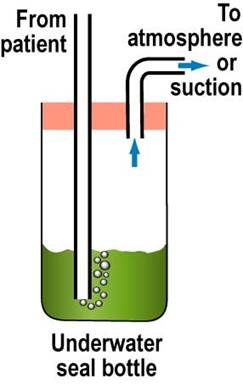
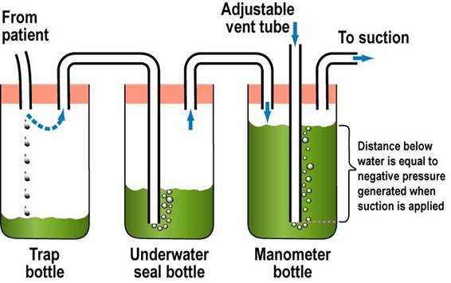
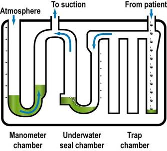

Chest
Drain
Insertion
Indications
Pneumothorax
- ongoing leak, tension, large, symptomatic
Haemothorax, Empyema, Persisting Effusion
Insertion
Review indication and radiology.
Inform and consent patient if possible.
It is painful, give morphine aliquots prior to insertion.
1. Determine site: nipple level, 5th ICS, anterior to mid-axillary
line.
- safe triangle, bordered by: anterior border of lat dorsi,
posterior border of pec. major, and horizontal line through
ipsilateral nipple.
- prepare underwater seal drain and instruments
- 28-32F for trauma; may choose smaller drains for other purposes
(e.g. simple pneumo, pleural effusion) and go Saldinger / pigtail
instead.
2. Prep, drape site, wash & gown.
- pt at 45o, hand behind head or out to side
- no sig skin tension, infection or # at site.
3. Anaesthetise area, infiltrate & aspirate at pleura.
- 2-3cm transverse incision at site, bluntly dissect through subcut
tissue over top of rib using a small curved haemostat or similar.
- the angle of your tract will partly determine the final position
of the tube; head anterior if want an anterior tube; heading
posterior increases chances of lie into fissure.
4. Puncture parietal pleura with tip of clamp
- put a gloved finger right into pleural cavity to avoid lung injury
and clear way.
5. Clamp proximal thoracostomy tube, advance into desired length.
- direct posteriorly along inside of chest wall.
- direct up for air, down for fluid.
- advance until all holes covered; no more; pain if abuts
mediastinum
- may need wound stitch to minimise hole leak.
6. Connect end of thoracostomy tube to underwater seal apparatus.
- apply suction if necessary.
7. Look for fogging of tube with expiration and listen for air
movement.
- look for swinging of the seal drain fluid.
8. Suture tube in place.
- purse-strings are associated with worse scar.
9. Apply dressing and tape tube to chest.
10. Obtain an XR, ABG, sats.
- and examine for surgical emphysema.
Complications
Lacerating, puncturing intrathoracic / abdominal organs (use finger technique)
Introducing infection.
Damaging intercostal bundle.
--> haemothorax
--> neuritis / neuralgia
Incorrect placement
Kinking, clogging, dislodging.
Persistent pneumothorax: large primary leak, leak at skin, suction
too strong, leaky underwater seal.
Subcutaenous emphysema (at site)
Recurrence of pneumothorax on removal (seal thoracostomy wound
immediately)
Lung failing to re-expand to plugged bronchus (need bronchoscopy)
Reaction to prep/LA
Management of the drainage system
In slowly developing pleural effusions:
- don't drain >1L in first hr, or >500ml/hr in subsequent hrs,
as risk of pulmonary oedema.
- this is good practice despite low evidence.
Underwater seal drains
Allow one-directional flow.
Use a high-volume, low-pressure system; do not attach to
high-pressure wall suction.
Always keep the drain lower than the patient or contents will
re-enter chest.
Connecting tube lies about 3cm underwater
- continuous bubbling suggests ongoing air leak.
- respiratory swing helps show tube patency.
One bottle system:
- 3cm underwater
- +ve pressure >3cm H20 will force air/fluid through seal
- bottle fluid will swing into drain as pleural pressure goes
negative
- inflow to chest prevented by hydrostatic pressure of tube; do not
elevate above pt's chest(!)

3-bottle system; standard
1. trapping chamber/s for fluid etc.
2. underwater seal bottle as above
3. manometer bottle to control suction flow / vent to atmosphere

Commonly arranged like this in commercial systems:

Removal
Remember 100-150ml of pleural fluid / day = normal.
- still produced when effusion drained to dryness
Don't stop suction:
Clamping
- never clamp ongoing pneumothorax
- never clamp a bubbling drain or they will tension.
- don't clamp if haemothorax
Removal
- sterile field
- removed dressings
- prepare stitch
- cut stay suture
- large sterile swab
- pt valsalvas
- rapidly remove, apply swab, massage in circle
- Tie sutures +/- additionals
- dress wound
- obtain CXR at 1hr.